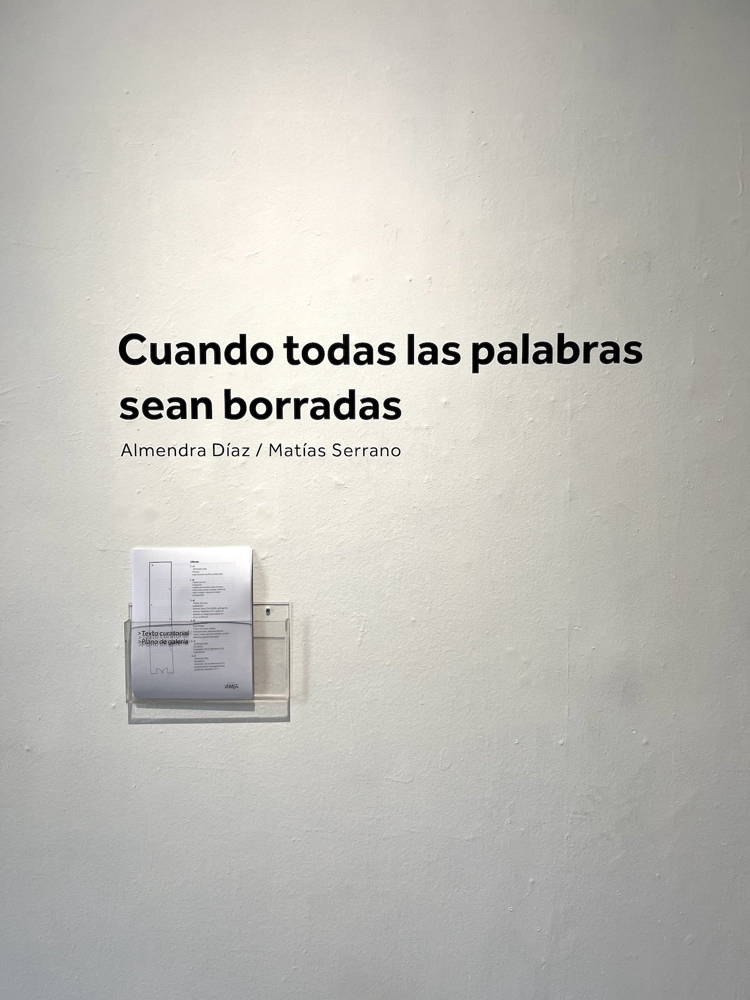
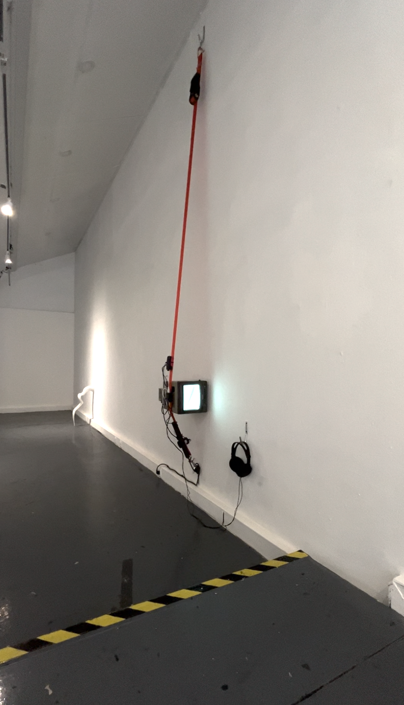
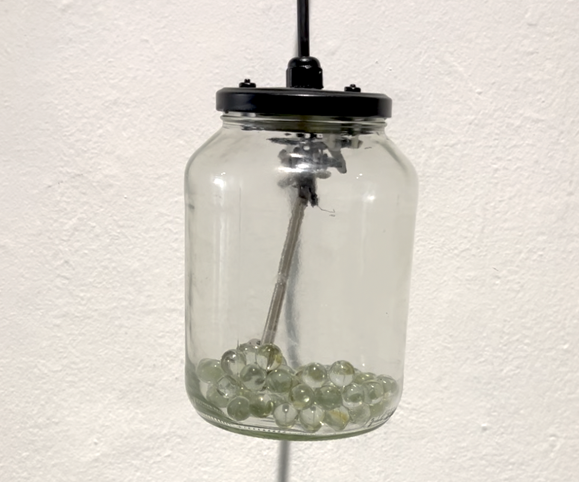
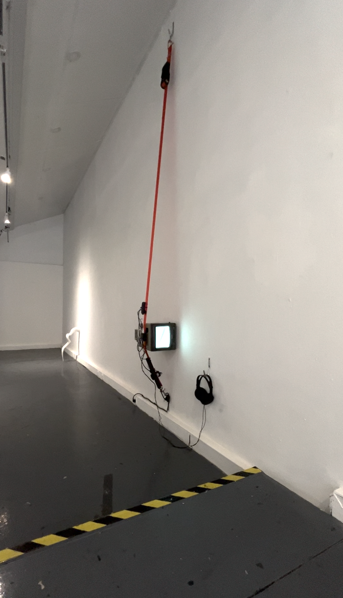
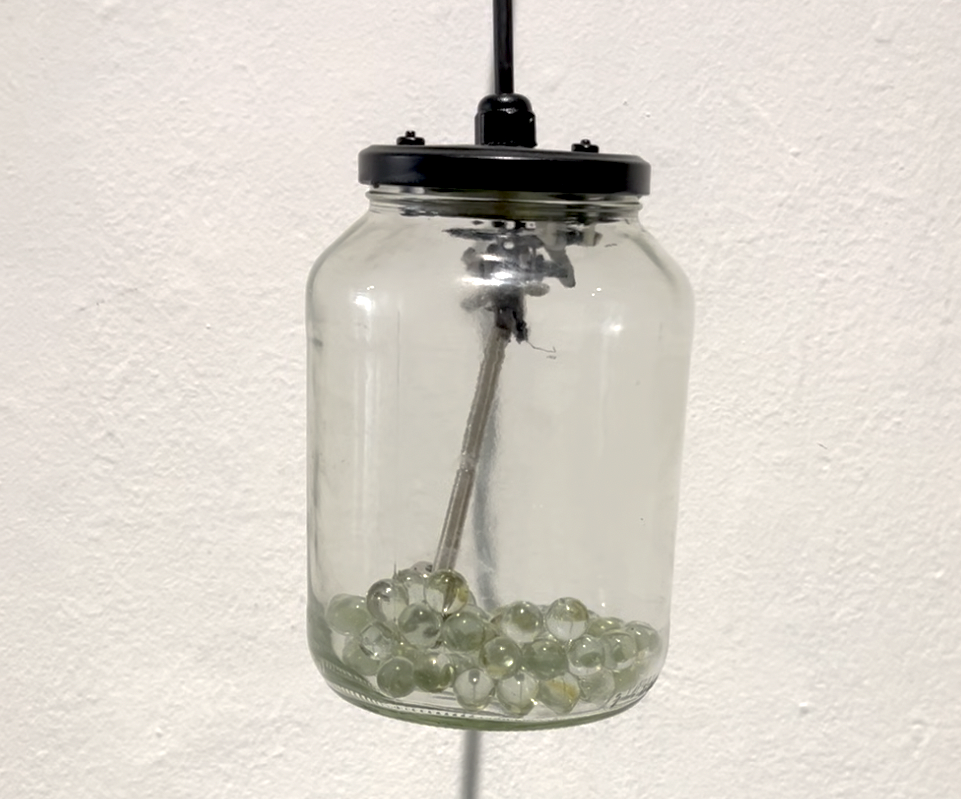

Llluvia Metropolitana
Proyecto de exposición de sitio y tiempo específico junto a Rainer Krause en Galería Metropolitana, del 10 al 30 de enero de 2026. Santiago, Chile.
Exposición apoyada por Goethe-Institut
Este proyecto contó con la colaboración de Plataforma Grieta y el Departamento de Artes Visuales de la Universidad de Chile
Apoyo en montaje por María Ignacia Valdebenito
Agradecimientos a Aylén Ayala, Vicente Espinoza, Fernanda Fábrega, Estefi Leighton, Ángel Olivares, Carolina Miguieles, Pamela Reyes, Zapa y Anita

Texto curatorial por Catalina Montero
Hablar de lluvia es abrir un mapa conceptual lleno de tipologías. Rocío, garúa, chubascos, aguacero, llovizna, tormentas. Hablar de lluvia es también abrir un caudal lleno de metáforas. Que el cielo está llorando, que llueve a cántaros, que llueve a mares. La lluvia es sin duda más que una gota de agua, es cadencia y ritmo, es el despliegue del tiempo. Quizás es por todo esto que ha sido el objeto de deseo y el signo que han usado artistas de todas partes del mundo para crear. Para algunos, lluvia puede ser el sonido que generan las teclas cuando escribimos. Para otros, lluvia es la repetición de un símbolo sobre el papel. Para Matías Serrano y Rainer Krause la lluvia es un sistema de relaciones entre tiempo, sonido y materialidad. Y es que si pensamos la lluvia como un continuo, que existe antes y después de nosotros, a pesar de nosotros, entonces podríamos preguntarnos por cómo nombrar a esa lluvia que cae y que nadie escucha.
Llluvia Metropolitana emerge alrededor de una premisa sonora que intenciona la experiencia sensible con el clima. Los artistas instalaron un sistema de grabación en los techos de zinc de la galería durante el período de lluvias invernales. Parte de este registro se nos presenta desde una altura a la que podemos acceder cuando subimos por un andamio reforzado. Se propone entonces un encuentro entre una lluvia anterior, o quizás una lluvia en pausa, que frente a la sensación atmosférica calurosa y seca, propia de enero en la ciudad, propone a lo menos una disonancia.
A esto se le suman las distintas piezas en sala con el objetivo de establecer la ///uvia como posibilidad, como un campo de asociación sin contornos en que la cuantificación de las gotas, o la lectura crítica de la historia que vincula la lluvia con la catástrofe, permiten imaginar la lluvia más allá de la forma de su palabra, más allá de su lectura como fenómeno o alegoría cargada de moral. Así, las lluvias de esta muestra buscan liberarse de su comprensión como estrato y sacudirse de la fetichización para explorar si acaso es posible concretar su liberación de la experiencia humana.
 



Afiches (por Rainer Krause)